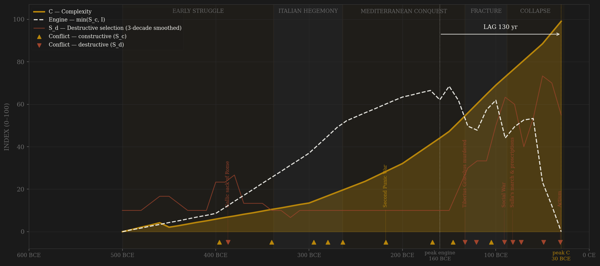
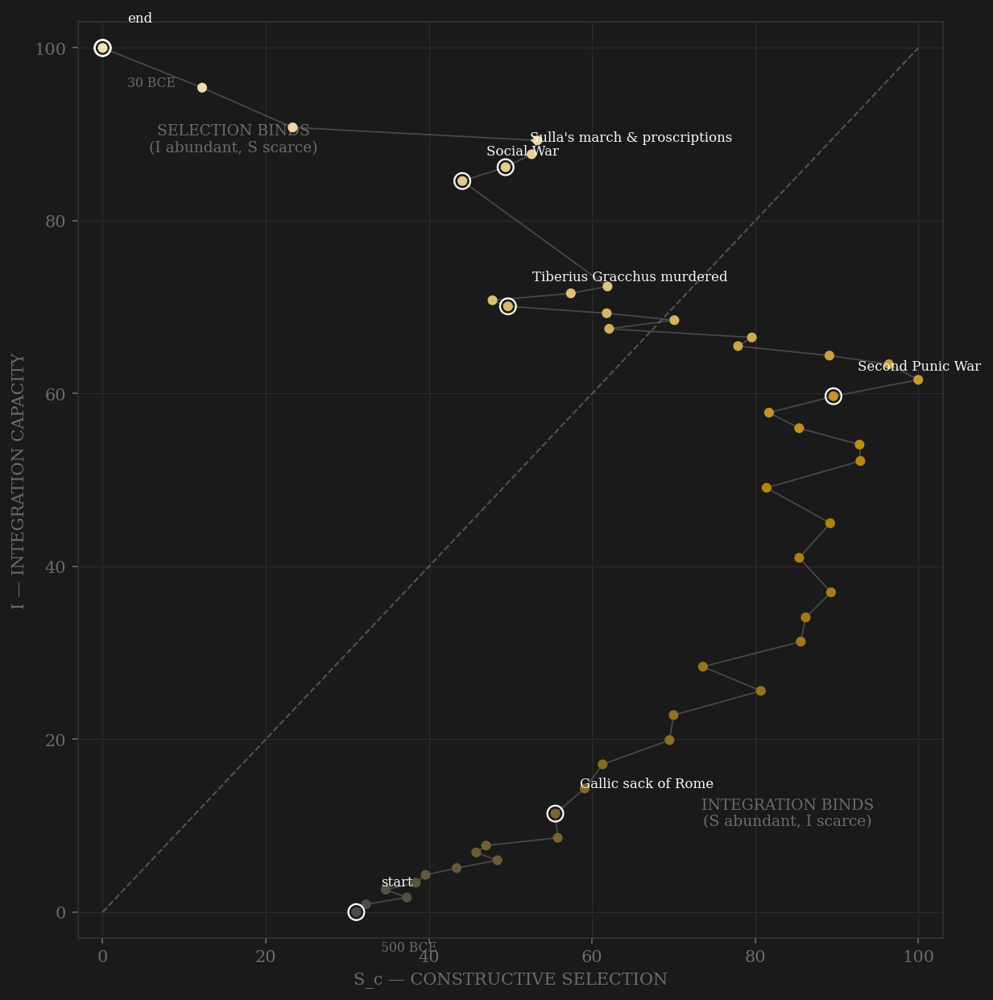

In its own frame the Republic does not start at peak contest — it builds contest. The Struggle of the Orders is four centuries of channel-A widening fought entirely within rules: the Twelve Tables publish the game, the Licinio-Sextian laws open the consulship, the lex Villia formalizes the ladder, Cato's censorship audits the winners. Constructive selection climbs from a patrician monopoly reading ~30 to its maximum in the Hannibalic decade, when war opens the ladder to its widest. Integration is the binding constraint for three and a half centuries — the engine simply tracks the roads, citizenship rolls, and sea lanes as they grow — until the curves cross around 160 BCE: the Polybian decade, Pydna won, the cursus at full function, the Gracchan fracture not yet opened. That crossing is the engine peak, the one moment the Republic has both. Then closure and blood take the selection axis down — the Gracchi murdered, the Social War forcing citizenship onto Italy at sword-point, Sulla's lists, the warlord decades — while integration keeps climbing on the concessions the violence extracts. Complexity crests at the very end, +130 years after peak engine: Cicero, Caesar's prose, the marble city — the output arriving as the machine that made it is dismantled. Peak C sits on the terminal row and is right-censored: Augustus inherits the delivery.

The trajectory enters at the bottom of the plot at middling contest and zero integration, then does something no other polity in the sample does: it climbs both axes together for three and a half centuries. Contest widens by statute (the Orders' settlements) while the roads and citizenship grow beneath it — a long diagonal ascent through the integration-binds quadrant, peaking in contest at the Second Punic War. It crosses the diagonal around 170 BCE: the brief Polybian window when Rome had both, and the only place the engine could peak. After the crossing, the path turns and slides down the selection axis while integration keeps rising — the Gracchan fracture, the Social War citizenship spike (the concession that jumps I ten points in one decade), the warlord collapse. The ending is the sharpest corner in the sample: the Republic dies at S = 0, I = 100 — contest extinguished with the integration stock at maximum. That corner is not a collapse; it is a bequest. The Principate begins exactly where this trajectory ends, and lives off the position for two centuries.
Each conflict is coded by locus and target, never by outcome. External rivalry that disciplines the state without touching its coordination machinery is constructive (S_c); violence aimed at the polity's own coordination capacity is destructive (S_d). Hannibal is the rule's hard case and its proof: fifteen years in Italy, yet the Senate levied armies throughout — S_c by target, because the machinery never broke. The Social War is the mirror case: allies inside the alliance system attacking the coordination machinery itself — S_d despite being 'external' to the citizen body, resolved by the citizenship concession that spiked integration. Gracchan legislation is channel-C contest within rules; the Gracchan murders are S_d events. The distinction keeps the finding falsifiable.
| YEAR | CONFLICT | CODE | CODING RATIONALE |
|---|---|---|---|
| 396 BCE | Fall of Veii | Sc | Decade-long siege of the Etruscan peer; military pay introduced to sustain it |
| 387 BCE | Gallic sack of Rome | Sd | External origin, core penetration — the city occupied, the Capitol besieged (Adrianople rule) |
| 340 BCE | Latin War | Sc | The allies demand a shared consulship — revolt inside a hegemonic alliance, not yet 'the system'; coded B with the S_d edge noted: the Social War in embryo. Settled by incorporation |
| 295 BCE | Sentinum | Sc | Samnite-Gallic-Etruscan coalition beaten — the peer war of the century |
| 280 BCE | Pyrrhic War | Sc | First contest with a Hellenistic great power; core untouched |
| 264 BCE | First Punic War | Sc | Naval capacity forced into existence by peer rivalry |
| 218 BCE | Second Punic War | Sc | Hannibal in Italy fifteen years, Cannae included — Senate and levy functioned throughout: coded by target, the machinery never broke |
| 168 BCE | Pydna | Sc | Third Macedonian War — the last peer monarchy of the old ring broken |
| 146 BCE | Carthage & Corinth razed | Sc | Third Punic + Achaean wars — both rivals eliminated in one year; victory begins killing the rivalry |
| 133 BCE | Tiberius Gracchus murdered | Sd | Political murder enters the Republic — the tribune and 300 followers clubbed to death; his legislation was channel C, the killing is S_d |
| 121 BCE | Gaius Gracchus & the first SCU | Sd | ~3,000 killed under the senatus consultum ultimum — the machinery legalizes killing its own |
| 105 BCE | Arausio | Sc | Cimbric war — 80,000 dead at the frontier: external locus despite the catastrophe; answered at Aquae Sextiae and Vercellae |
| 91 BCE | Social War | Sd | The allies inside the system attack the coordination machinery itself; resolved by the citizenship expansion that spiked I ten points in a decade |
| 82 BCE | Sulla's march & proscriptions | Sd | The army enters politics — Colline Gate, then the elite purged by list; Senate doubled by appointment, not election |
| 73 BCE | Spartacus revolt | Sd | Internal servile war |
| 49 BCE | Caesar crosses the Rubicon | Sd | Legions against the Senate — Pharsalus, Thapsus, Munda; dictatorship perpetual |
| 31 BCE | Actium | Sd | The final warlord contest; contested politics ends with it — the Republic's terminal S_d event |
| COMPONENT | GRADE | BASIS |
|---|---|---|
| S_c v2 — A · elite-entry (0.40) | ◐ hybrid | 0.5 × novi homines % (Broughton MRR; Hopkins 1983) + 0.5 × coded cursus/censor ordinal. Proxy truncated after 100 BCE: the Sullan/Caesarian observations are entry by dictatorial adlection, not election — the same locus contamination that excluded the series from the unified S_c, in miniature. Republican portion re-audited clean: it measures entry by competition |
| S_c v2 — B · external rivalry (0.30 hard cap) | ○ scholar-coded | Locus-cleaned war ordinal: Veii/Samnite/Pyrrhic/Punic/Macedonian/Jugurthine/Cimbric = B; Social War, civil wars, servile wars = S_d, excluded. Eckstein 2006; Harris 1979; Gruen 1974 |
| S_c v2 — C · within-rules contest (0.30) | ○ scholar-coded index | political_competition_index (Broughton MRR; Hopkins 1983; Hölkeskamp 2010) — v1's entire Rome S_c, Republic portion rescaled within polity: contested elections, tribunate legislation contests; the richest C channel in the roster |
| S_d — Destructive selection | ○ scholar-coded | Per-decade 0–10 ordinal by locus and target: Gallic sack, Gracchan murders, SCU killings, Social War, Sulla/Marius, servile wars, the warlord wars — coding_ledger_v2.csv |
| I — Integration | ◐ proxy series | Road km (Laurence 1999), citizenship % (Mouritsen 1998), Mediterranean shipwrecks (Parker 1992 / Wilson 2011), social mobility (Hopkins 1983) — re-normalized within polity |
| C — Complexity | ◐ proxy series | Literary / legal / monumental indices (OCD; Conte 1994), urbanization (de Ligt 2012; Morley 1996), GDP per capita (Maddison 2007; Scheidel & Friesen 2009) |
| E — Entropy | ● lab-measured | Denarius silver content (Butcher & Ponting 2014), from 211 BCE — nearly flat at 95% for the whole Republic: kept raw, not min-maxed, so the stability reads as stability |
SPLIT VIEW: Rome enters Campbell's roster as two constitutional regimes — this page (509–27 BCE) and roman_empire (27 BCE–476 CE) — per his dynasty-split rule; the unified rome page stays live as the continuity view. All 0–100 columns re-normalized within this polity, rebuilt from the unified build's component files, not sliced. Lag under BOTH S definitions (frozen protocol, 3-decade smoothing, engine = min(Sc,I)): v2 contestability +130 PASS (engine 160s BCE → C 30s BCE); v1 external-war-only +40 PASS (engine 70s BCE → C 30s BCE). Both in-window; unsmoothed +120/+30, verdicts unchanged. Peak C on the terminal row = RIGHT-CENSORED (the Golden Age crests as the polity dies; Augustus inherits the delivery). The split resolves the unified page's +200 LONG: that lag ran from a Republican engine to an early-imperial output across the -27 constitutional break — under the split each regime gets its own honest number. Rebuild: scripts/build_rome_split_sicre.py, then scripts/polity_report.py --slug roman_republic